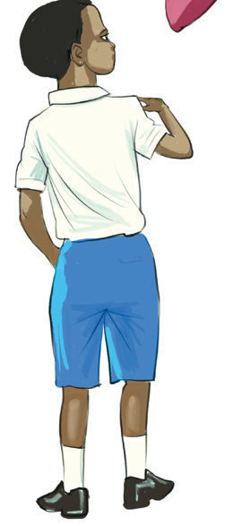
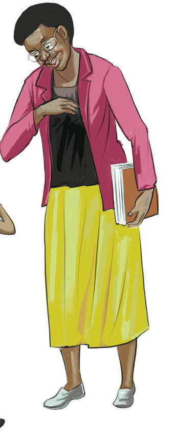
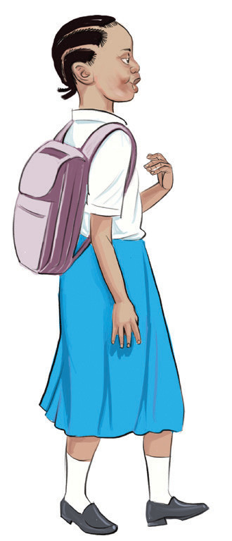
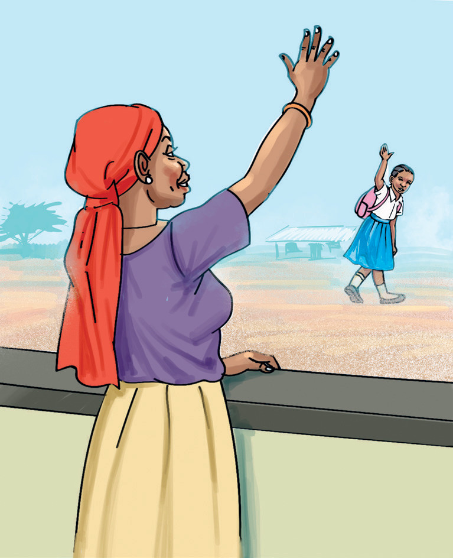
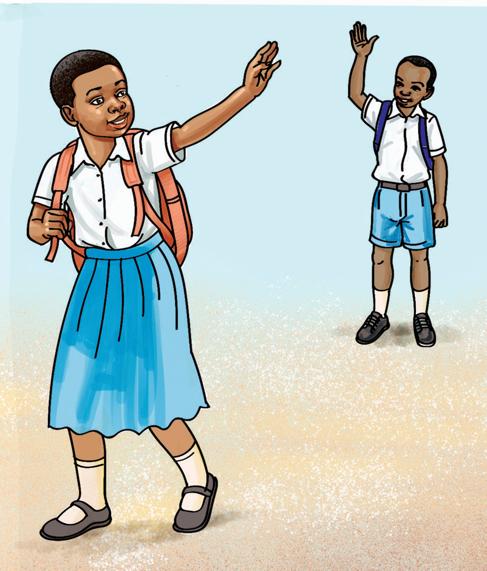

Kufahamiana



Wimbo
Mwenzangu unaitwa nani?
Ninaitwa (jina).
(jina) unatoka wapi?
Ninatoka (mahali).
Kuagana





Mwenzangu unaitwa nani?
Ninaitwa (jina).
(jina) unatoka wapi?
Ninatoka (mahali).

